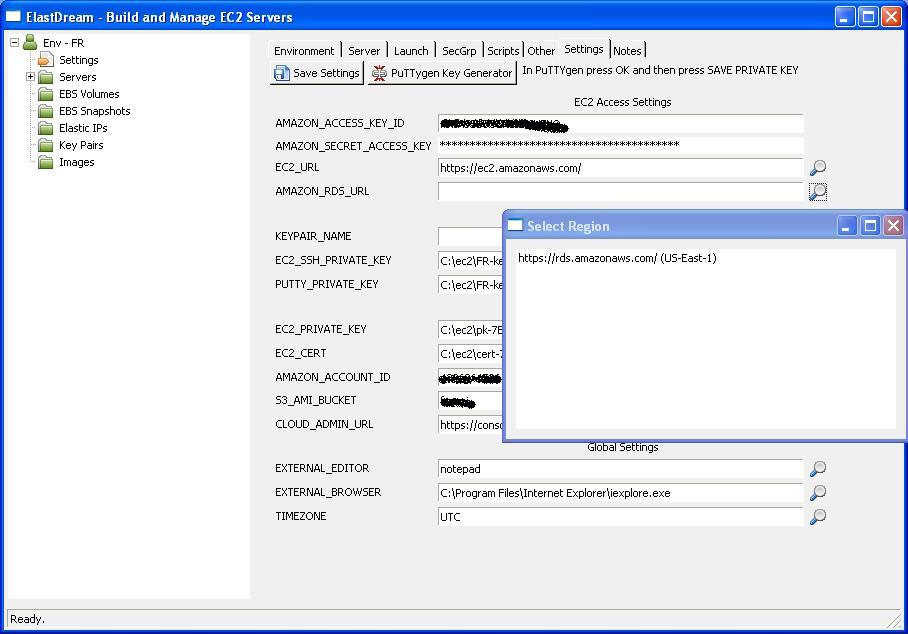
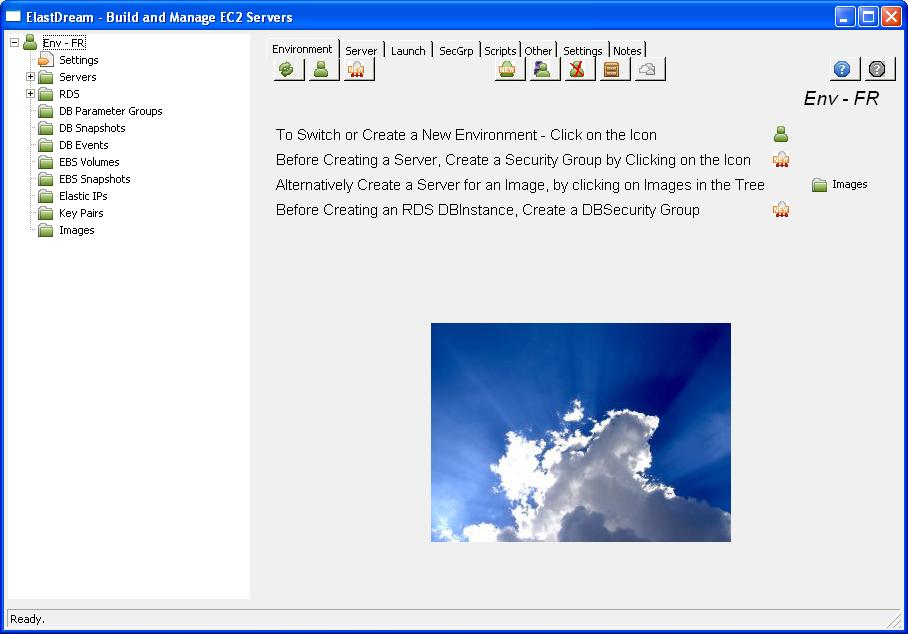

Enable RDS in EC2Dream
To enable Amazon RDS in EC2Dream the Amazon RDS URL must be configured.
1. In the EC2Dream System Admin click on Settings in the tree view and in the Settings tab set AMAZON RDS URL. Press the
 icon to get a list of Amazon RDS URLs to select.
icon to get a list of Amazon RDS URLs to select.

2. Then press "Save Settings" and restart EC2Dream and extra RDS entries will appear in the tree view.
